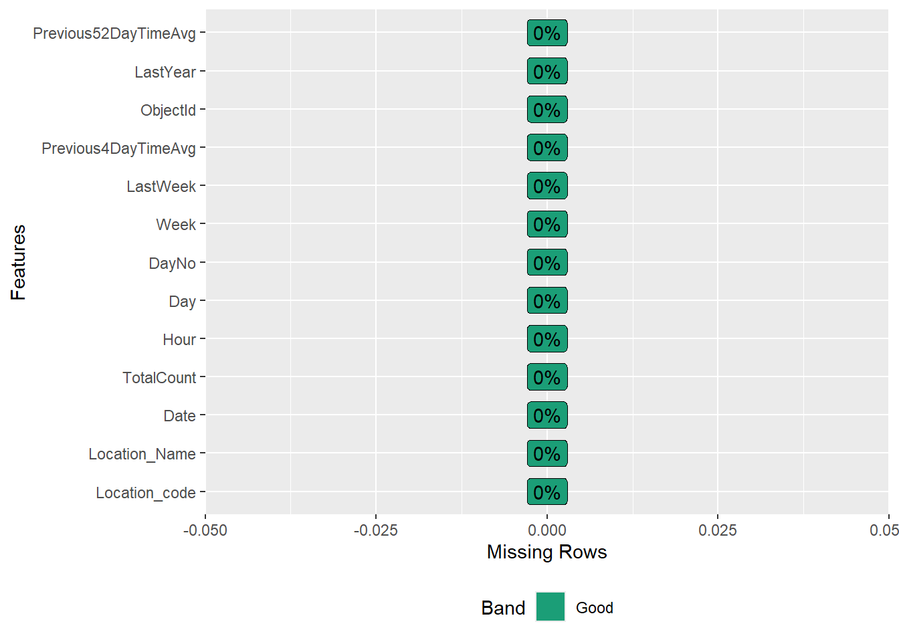
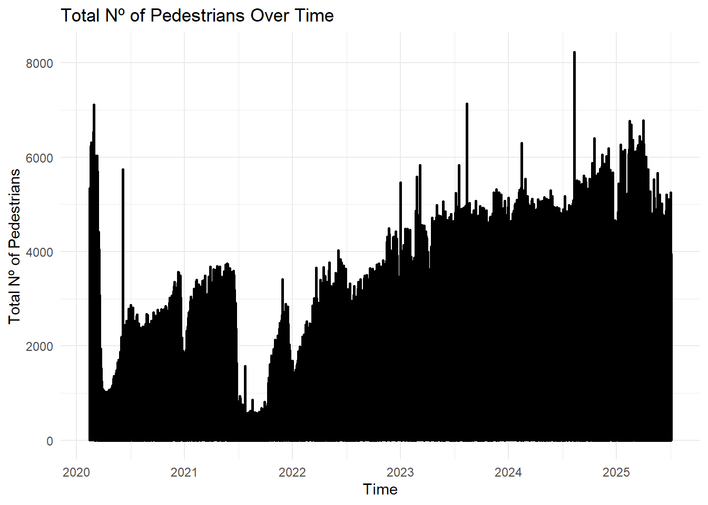
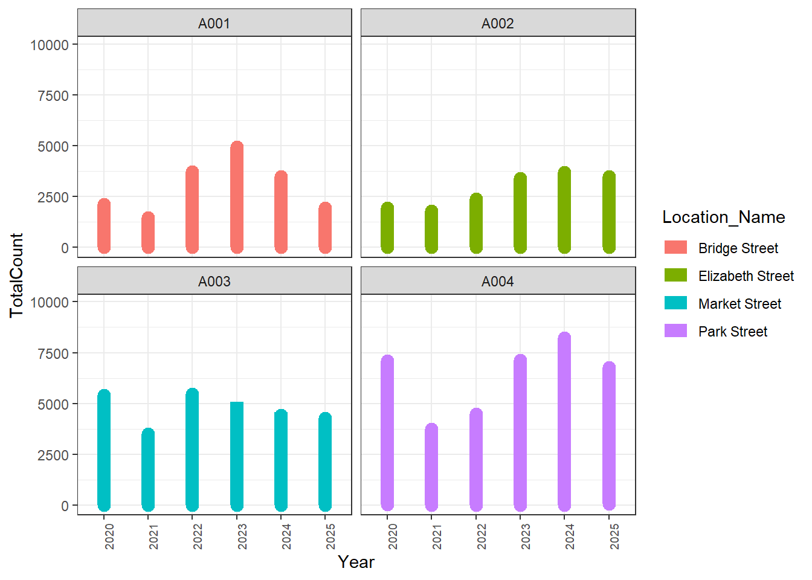
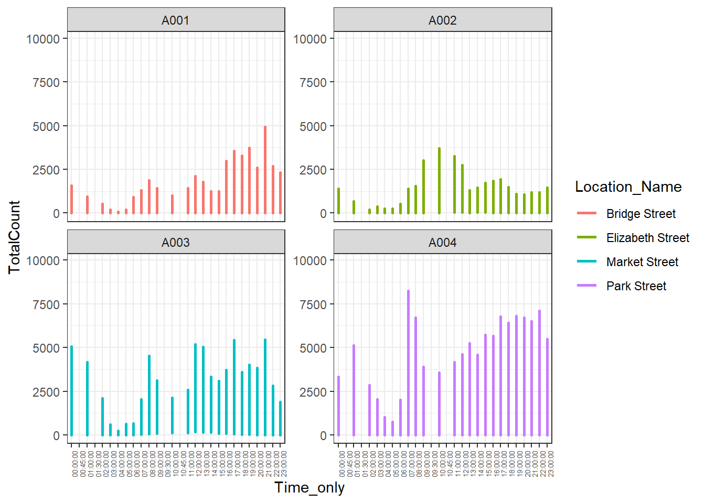

Code
data_csv <- read.csv("https://github.com/valenca13/EIT_Course_BigData/releases/download/Datasets/Automatic_Hourly_Pedestrian_Count.csv")Hourly pedestrian counts from automatic sensors in our local area.
Data is openly available at: https://data.cityofsydney.nsw.gov.au/datasets/cityofsydney::automatic-hourly-pedestrian-count
This dataset contains hourly pedestrian counts by location in Sydney, Australia.
Automated counters were placed in busy areas of the CBD to assess performance.
Data collection began in February 2020 and ended in June 2025.
The dataset can be downloaded in many formats.
You can also import the data in many formats. Choose the one you prefer
data_csv <- read.csv("https://github.com/valenca13/EIT_Course_BigData/releases/download/Datasets/Automatic_Hourly_Pedestrian_Count.csv")First Unzip file and place them into the ´Data´ file.
#Unzip file
unzip("Data/Automatic_Hourly_Pedestrian_Count_Sydney.zip", junkpaths = TRUE)library(sf)
data_shapefile <- read_sf("Automatic_Hourly_Pedestrian_Count.shp")It is good practice to: * convert the database into dataframe, as many packages only work with dataframes. * To not work on the raw dataset.
library(tidyverse)
df <- data.frame(data_csv)Structure of the dataset
str(df)'data.frame': 188720 obs. of 13 variables:
$ Location_code : chr "A004" "A003" "A002" "A001" ...
$ Location_Name : chr "Park Street" "Market Street" "Elizabeth Street" "Bridge Street" ...
$ Date : chr "2025/07/04 13:00:00+00" "2025/07/04 13:00:00+00" "2025/07/04 13:00:00+00" "2025/07/04 13:00:00+00" ...
$ TotalCount : int 3234 2454 596 870 3943 3161 978 1382 2887 1954 ...
$ Hour : int 13 13 13 13 12 12 12 12 11 11 ...
$ Day : chr "Friday" "Friday" "Friday" "Friday" ...
$ DayNo : int 5 5 5 5 5 5 5 5 5 5 ...
$ Week : num 2025 2025 2025 2025 2025 ...
$ LastWeek : int 4241 2788 785 990 3559 2967 732 1266 2823 1976 ...
$ Previous4DayTimeAvg : int 3906 2676 725 954 3643 2930 822 1242 2777 1859 ...
$ ObjectId : int 1 2 3 4 5 6 7 8 9 10 ...
$ LastYear : int 3242 2679 800 1035 3100 2796 792 1295 2337 1850 ...
$ Previous52DayTimeAvg: int 3735 2622 800 940 3423 2698 812 1119 2705 1830 ...Summary
library(skimr)
skim(df)| Name | df |
| Number of rows | 188720 |
| Number of columns | 13 |
| _______________________ | |
| Column type frequency: | |
| character | 4 |
| numeric | 9 |
| ________________________ | |
| Group variables | None |
Variable type: character
| skim_variable | n_missing | complete_rate | min | max | empty | n_unique | whitespace |
|---|---|---|---|---|---|---|---|
| Location_code | 0 | 1 | 4 | 4 | 0 | 4 | 0 |
| Location_Name | 0 | 1 | 11 | 16 | 0 | 4 | 0 |
| Date | 0 | 1 | 22 | 22 | 0 | 47221 | 0 |
| Day | 0 | 1 | 6 | 9 | 0 | 7 | 0 |
Variable type: numeric
| skim_variable | n_missing | complete_rate | mean | sd | p0 | p25 | p50 | p75 | p100 | hist |
|---|---|---|---|---|---|---|---|---|---|---|
| TotalCount | 0 | 1.00 | 731.49 | 911.69 | 0.00 | 85.00 | 374.00 | 1005.00 | 8230.00 | ▇▁▁▁▁ |
| Hour | 0 | 1.00 | 11.50 | 6.92 | 0.00 | 6.00 | 11.00 | 17.00 | 23.00 | ▇▇▆▇▇ |
| DayNo | 0 | 1.00 | 3.00 | 2.00 | 0.00 | 1.00 | 3.00 | 5.00 | 6.00 | ▇▅▃▅▇ |
| Week | 0 | 1.00 | 2022.59 | 1.56 | 2020.07 | 2021.25 | 2022.44 | 2024.09 | 2025.27 | ▇▇▇▇▇ |
| LastWeek | 848 | 1.00 | 731.71 | 911.50 | 0.00 | 86.00 | 374.00 | 1005.00 | 8230.00 | ▇▁▁▁▁ |
| Previous4DayTimeAvg | 2016 | 0.99 | 728.48 | 885.02 | 0.00 | 94.00 | 388.00 | 1008.00 | 6271.00 | ▇▂▁▁▁ |
| ObjectId | 0 | 1.00 | 94360.50 | 54478.92 | 1.00 | 47180.75 | 94360.50 | 141540.25 | 188720.00 | ▇▇▇▇▇ |
| LastYear | 36052 | 0.81 | 676.33 | 838.84 | 0.00 | 83.00 | 348.00 | 938.00 | 7129.00 | ▇▁▁▁▁ |
| Previous52DayTimeAvg | 34272 | 0.82 | 729.73 | 832.10 | 1.00 | 118.00 | 418.00 | 1048.00 | 5325.00 | ▇▂▁▁▁ |
Check Missing data
table(is.na(df))
FALSE TRUE
2380172 73188 Plot missing data
library(DataExplorer)
plot_missing(df, plotly = TRUE)df_missingListwise = na.omit(df) #removes all rows with at least one NA in any variableplot_missing(df_missingListwise)
df_missingPairwise = df[!is.na(df$Previous52DayTimeAvg),] #removes all rows with NA in Previous52DayTimeAvg variableFor our case, which treatment would be better?
Convert the variable “Day” into a factor.
df$Day <- factor(df$Day, labels = c("Sunday", "Monday", "Tuesday", "Wednesday", "Thursday", "Friday", "Saturday"), ordered = TRUE)
str(df$Day) Ord.factor w/ 7 levels "Sunday"<"Monday"<..: 1 1 1 1 1 1 1 1 1 1 ...Check how many automatic counters there are:
unique(df$Location_code)[1] "A004" "A003" "A002" "A001"unique(df$Location_Name)[1] "Park Street" "Market Street" "Elizabeth Street" "Bridge Street" The location exact location of the automatic counters is not given in the dataset.
We need at least an approximation, to perform spatial analysis.
Check the description in the dashboard: https://experience.arcgis.com/experience/a0abf612051a4cc79918e6ce5ee7295b/
Go to Google Maps and retrieve the locations:
df$Latitude[df$Location_code == "A001"] <- -33.863518
df$Longitude[df$Location_code == "A001"] <- 151.209968
df$Latitude[df$Location_code == "A002"] <- -33.871667
df$Longitude[df$Location_code == "A002"] <- 151.210080
df$Latitude[df$Location_code == "A003"] <- -33.870783
df$Longitude[df$Location_code == "A003"] <- 151.206607
df$Latitude[df$Location_code == "A004"] <- -33.873041
df$Longitude[df$Location_code == "A004"] <- 151.207565library(sf)Linking to GEOS 3.14.1, GDAL 3.12.1, PROJ 9.7.1; sf_use_s2() is TRUEdf_sf <- st_as_sf(
df,
coords = c("Longitude", "Latitude"),
crs = 4326
)Note: Google Maps uses WGS84, which corresponds to EPSG = 4326
Create an iterative map
library(mapview)
df_map <- unique(df_sf$geometry)
mapview(df_map)Parse date-times with year, month, and day, hour, minute, and second components.
library(lubridate)
df_sf$Date <- ymd_hms(df_sf$Date, tz = "UTC")Check the class of the variable ´Date´
class(df$Date)[1] "character"class(df_sf$Date)[1] "POSIXct" "POSIXt" Create new variables separating Date, Year, and Time
df_sf$Date_only <- as.Date(df_sf$Date)
df_sf$Year <- format(df_sf$Date, "%Y")
df_sf$Time_only <- format(df_sf$Date, "%H:%M:%S")library(ggplot2)
ggplot(df_sf, aes(x = Date, y = TotalCount)) +
geom_line(linewidth = 1) +
scale_x_date(
date_breaks = "1 year",
date_labels = "%Y"
) +
labs(
title = "Total Nº of Pedestrians Over Time",
x = "Time",
y = "Total Nº of Pedestrians"
) +
theme_minimal()
ggplot(df_sf, aes(x = Date, y = TotalCount, colour = Location_Name)) +
geom_line() +
facet_wrap(~ Location_code) + # insert "scales = "free_y" to adapt the maximum of Y in each plot
theme_gray() +
theme(axis.text.x = element_text(angle = 90, size = 6)) +
scale_x_date(
date_breaks = "1 year",
date_labels = "%Y"
) +
labs(
title = "Total Nº of Pedestrians by Automatic Counter Over Time",
x = "Time",
y = "Total Nº of Pedestrians"
)
Facet_wrap divides the plots per automatic counter.
ggplot(df_sf, aes(x = Year, y = TotalCount, colour = Location_Name)) +
geom_line(linewidth = 4) +
facet_wrap(~ Location_code) + # insert "scales = "free_y" to adapt the maximum of Y in each plot
theme_bw() +
theme(axis.text.x = element_text(angle = 90, size = 7)) +
scale_y_continuous(limits = c(0, max(df_sf$TotalCount) * 1.2))
ggplot(df_sf, aes(x = Time_only, y = TotalCount, colour = Location_Name)) +
geom_line(linewidth = 1) +
facet_wrap(~ Location_code, scales ="free_y") +
theme_bw() +
theme(axis.text.x = element_text(angle = 90, size = 5, hjust = 1)) +
scale_y_continuous(limits = c(0, max(df_sf$TotalCount) * 1.2))
Try changing the themes for different appearances.
Note: Find here the documentation and ´cheatsheet´ of the ggplot2 package: https://ggplot2.tidyverse.org/
library(dplyr)
df_sf <- df_sf %>%
mutate(
Year = format(Date, "%Y"),
DayYear = paste(Day, Year, sep = "_"),
DayYear = factor(DayYear, levels = unique(DayYear)) # preserve order
)Plot
ggplot(df_sf, aes(x = DayYear, y = TotalCount, colour = Day)) +
geom_line(size =3) +
# geom_point(size = 2) +
theme_minimal() +
theme(
axis.text.x = element_text(angle = 90, size = 7)
)Warning: Using `size` aesthetic for lines was deprecated in ggplot2 3.4.0.
ℹ Please use `linewidth` instead.
Criar uma variavel de juntar por dia semana e por ano.
mutate e um groupby e summarize para fazer a soma de total counts.
grafico para os 5 dias da semana.
https://data.cityofsydney.nsw.gov.au/pages/open-data#Categories
You can add options to executable code like this
[1] 4The echo: false option disables the printing of code (only output is displayed).